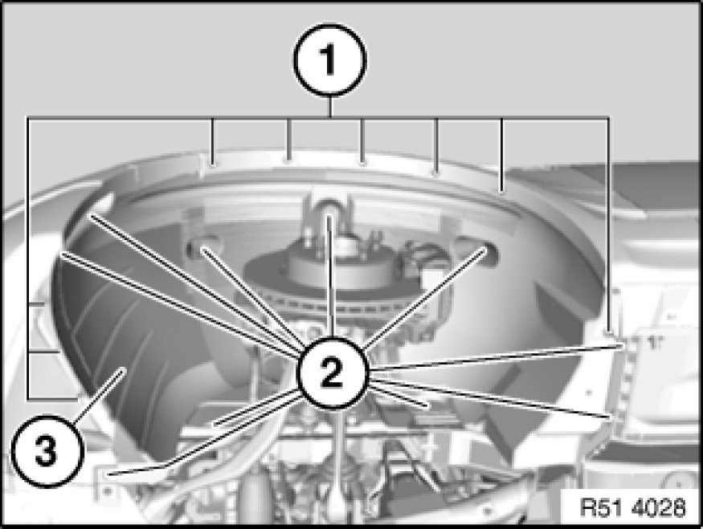

Front Fender Liner: Service and Repair
51 71 040 - Removing and installing/replacing front left or right wheel arch cover

Necessary preliminary tasks:
- Remove front wheel Removing or Installing Front or Rear Wheel
Note:
The operation is described on the left side; proceed in the same way for the right side.

Drill off blind rivets (1).
Unfasten screws (2).
Carefully feed out wheel arch cover (3).
Installation:
Ensure wheel arch cover (3) is correctly seated.